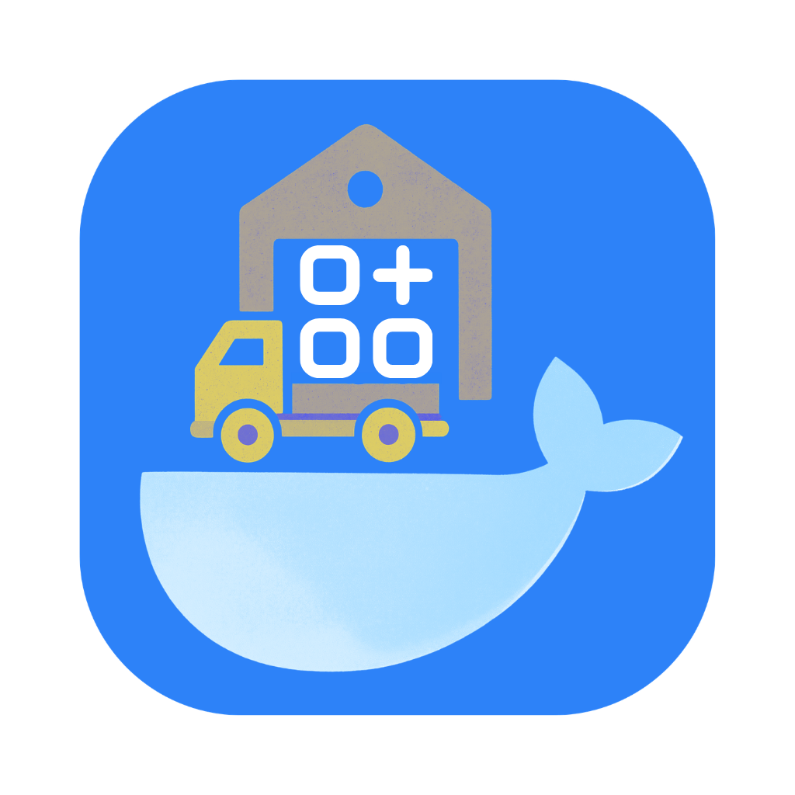

The Loading Dock(r)
0%
Install
Later
Starting Docker — please wait…
Docker Hub
Installed
Recommended Apps
Docker App
Docker Compose
Name
Docker Image
Ports
Open URL (optional)
Group
Tags (comma separated)
Restart Policy
No
On failure
Unless stopped
Healthcheck Command
Interval (s)
Timeout (s)
Retries
Environment Variables
+ Add
Volumes
+ Add
Project Name
Compose YAML
Cancel
Add
Edit Docker App
Name
Docker Image
Ports
Open URL (optional)
Group
Tags (comma separated)
Restart Policy
No
On failure
Unless stopped
Healthcheck Command
Interval (s)
Timeout (s)
Retries
Environment Variables
+ Add
Volumes
+ Add
Delete
Cancel
Save
Docker Hub
Search
Popular
Close
Browse popular images